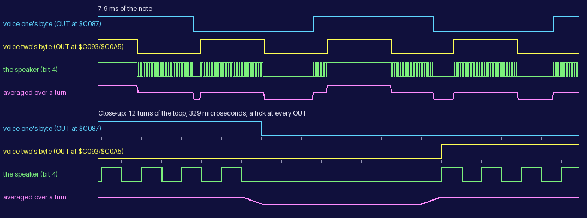
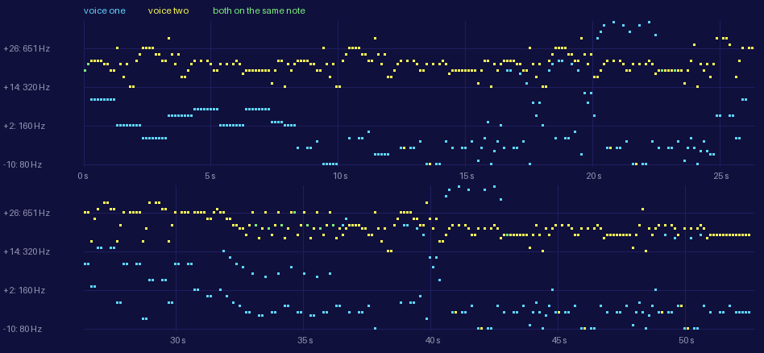

| Sounds: the loading tune |
Fairlight has one piece of music and no sound effects. The loading tune -- music by Mark Alexander, as ZXDB credits it -- plays once over the loading screen, 52.59 s of it in two voices, until a key is pressed; from the title screen on the game makes no sound at all. No footsteps, no jumps, no blows, no doors, no pick-ups, no chime for a message: nothing.
That is a finding, not an omission here, and it rests on two things. A 48K Spectrum makes sound only by an OUT to port $FE that changes its bit 4. The listing has three instructions that write a port, $C087, $C093, $C0A5, all of them in the tune's player TUNE_PLAY_NOTE, and reaches the ROM only through CALL $028E at $C00F (in LOADING_TUNE); CALL $22B0 at $E423 (in COMPOSITE_TO_SCREEN) -- KEY-SCAN and PIXEL-ADD, neither of which writes a port; and interrupts are off from start-up on (START), so the ROM's interrupt routine does not run (read). And the build's own nine play sessions, 34 minutes of emulated play between them -- every room entered and the keys tried in it, every door walked through, every thing picked up, used and dropped, everything in every room met, a game lost and the quest done -- were run again for this page with every OUT to any port logged: the only ones were the tune's, in the half-second each session lets it play before its first key (measured). Ville Krumlinde's disassembly says the same of the game in play: his notes on the close-range strike observe that nothing in it outputs to port $FE. His snapshot was taken mid-game, after the room buffers had been written over the tune at $C000, so the tune itself is not in his listing.
| Session | Emulated | OUTs by the tune | Any other OUT |
|---|---|---|---|
| keyboard | 33 s | 36,864 | none |
| Kempston joystick | 31 s | 36,864 | none |
| every room | 944 s | 36,864 | none |
| every door | 419 s | 36,864 | none |
| game over | 22 s | 36,864 | none |
| the end of the quest | 4 s | 36,864 | none |
| the quest done | 6 s | 36,864 | none |
| too heavy | 27 s | 36,864 | none |
| meeting everything | 542 s | 36,864 | none |
START, the game's first instruction, calls LOADING_TUNE while the loading screen is still up. It sets both voices to the start of the tune, turns interrupts off, and then plays a note (TUNE_PLAY_NOTE) and calls the ROM's KEY-SCAN, over and over, until a key is down; the note under way finishes first, so a key stops the tune within an eighth of a second. Each voice has 418 notes, but the last 3 are rests in both, and a note both voices rest is not played at all (TUNE_PLAY_NOTE returns at once), so 415 notes are heard. After them each voice goes back to its own last note, a rest (TUNE_RESTART_VOICE), for ever: a player who waits hears the tune once and then silence, while the loop goes on reading the keyboard.
Recorded: the game run from its first instruction in SkoolKit's simulator, no key held, stopped at TUNE_PLAY_NOTE's look-up of the two pitches ($C069) in each note and on to the next; from the call of LOADING_TUNE to the first note both voices rest.
Checked: all 415 notes were compared, edge by edge, with a model of TUNE_PLAY_NOTE's loop worked out from its instructions: each voice starting from TUNE_PORT's byte (0) with a countdown of 1; voice one's OUT 8 T-states into each 96-T-state turn and voice two's at 56; a turn of 97 at the end of each pass of 256 but the last; each voice's bit toggled when its countdown runs out. Every one of the 1,828,260 edges was where the model puts it, to the T-state. From one note's last OUT to the next note's first, 1,176 to 1,187 T-states: the ROM's KEY-SCAN and the next note's set-up. After the last note, a further second of the loop made no edge.
52.59 s, 415 notes, 1,828,260 edges, 1013 Hz at the highest, 80 Hz at the lowest.
The speaker is one bit: on or off. TUNE_PLAY_NOTE makes two voices of it by taking turns. Its loop runs 4,608 times a note, 96 T-states a time, and keeps two copies of the port byte, voice one's in A' and voice two's in A, each with its own countdown (E and L). Each turn it sends voice one's byte to port $FE, counts its countdown down and, if it has run out, reloads it from the voice's pitch and flips bit 4 in that voice's copy; 48 T-states later it does the same for voice two. So each voice is a square wave that flips every so many turns -- its pitch -- and the speaker spends the first half of every turn showing voice one's level and the second half voice two's. Where the voices agree the speaker stays put; where they differ it switches every 48 T-states, 36,458 times a second, far faster than the speaker cone or an ear can follow, and what is heard is the average: half. The result is the sum of the two square waves, each at half the volume -- a mix made in time rather than in voltage. For the mix to be fair both halves of the turn must be the same length whatever the countdowns do, and they are: the loop has two ways round (voice one's countdown run out or not), padded to 96 T-states each by two NOPs and a JR Z at $C09E that can never jump, and voice two's OUT comes at the same point on both.

Note 7 of the tune, drawn from its OUTs as the recording logged them: voice one on note +10 (a pitch of 72 turns, 253 Hz) and voice two on note +21 (38 turns, 480 Hz). In the upper panel the speaker row is solid where it switches too fast to draw; in the close-up each tick is an OUT, and the switching shows turn by turn. The lowest row is the speaker averaged over one turn, which is how the recordings on this page are rendered (below).
A voice that rests is not silent: its pitch is 1, so it flips every turn, a square wave at 18.2 kHz, above most people's hearing. In the mix it is there at half volume like any other note. The two recordings below are the opening with one voice resting throughout.
Recorded: as the whole tune, with voice two's 418 note bytes poked to 41, a rest, before the game started, and stopped after 64 notes.
Checked: all 64 notes were compared, edge by edge, with a model of TUNE_PLAY_NOTE's loop worked out from its instructions: each voice starting from TUNE_PORT's byte (0) with a countdown of 1; voice one's OUT 8 T-states into each 96-T-state turn and voice two's at 56; a turn of 97 at the end of each pass of 256 but the last; each voice's bit toggled when its countdown runs out. Every one of the 294,911 edges was where the model puts it, to the T-state. From one note's last OUT to the next note's first, 1,187 T-states: the ROM's KEY-SCAN and the next note's set-up.
8.11 s, 294,911 edges.
Recorded: as the whole tune, with voice one's 418 note bytes poked to 41, a rest, before the game started, and stopped after 64 notes.
Checked: all 64 notes (4 of them rests in both voices, which TUNE_PLAY_NOTE skips at once) were compared, edge by edge, with a model of TUNE_PLAY_NOTE's loop worked out from its instructions: each voice starting from TUNE_PORT's byte (0) with a countdown of 1; voice one's OUT 8 T-states into each 96-T-state turn and voice two's at 56; a turn of 97 at the end of each pass of 256 but the last; each voice's bit toggled when its countdown runs out. Every one of the 276,480 edges was where the model puts it, to the T-state. From one note's last OUT to the next note's first, 1,176 to 2,233 T-states: the ROM's KEY-SCAN and the next note's set-up, with another KEY-SCAN for each note skipped.
7.60 s, 276,480 edges.
The tune's data is TUNE_VOICES. Its first eight bytes are two words for each voice: the address before its first note, which LOADING_TUNE copies into the voice's pointer, VOICE_ONE_AT or VOICE_TWO_AT among the tune's variables, and the address it goes back to after its end (its last note). Then the pitch table (TUNE_NOTES, offset 8, 54 bytes), then voice one's notes ended by $40, then voice two's, 418 each. A note is one byte, a signed number of semitones from -12 to 40 ($FB is -5), or 41 for a rest, and every note lasts the same time: there are no lengths, a held note is the same note written again, and both voices step on together a note at a time, so the two lists are read side by side. TUNE_NEXT_NOTE takes a voice's next note and TUNE_PITCH looks up its pitch, the byte at the note plus 12 in the table: the number of turns between two flips of the voice's bit. A wave is twice that, so a note of pitch P sounds at 3,500,000 / (192 P) Hz. A note lasts 18 passes of 256 turns (256 less NOTE_LENGTH, $EE), 442,385 T-states, and with the ROM's KEY-SCAN and the next note's set-up comes round every 0.1267 s -- 473 a minute.
The pitches fall by about a semitone a step ($FF, $F0, $E3 ...), each close to 0.944 of the one before, and whoever made the table rounded them to whole turns, so the highest notes, where a turn is a large part of the wave, are the least exact (the top two, 12 and 13 turns, are 1.4 semitones apart). Against the equal-tempered scale on A = 440 Hz, notes -12 to +24 come out 30 to 61 cents (half of them 45 or more) above the nearest note of it below them here -- close to half a semitone sharp. That is the simulator's Spectrum, which never holds up an OUT; a real one's ULA holds up every OUT to port $FE made while it is drawing the screen, which stretches the turns and flattens every note by an amount this page does not measure (the emulator this project uses does not model the delay either).
| Note | Index | Pitch (turns) | Frequency | Scale note below it, cents above | Voice one plays it | Voice two |
|---|---|---|---|---|---|---|
| -10 | $02 | 227 | 80.3 Hz | D#2 +55 | 26 | 5 |
| -9 | $03 | 215 | 84.8 Hz | E2 +49 | 4 | |
| -7 | $05 | 192 | 94.9 Hz | F#2 +45 | 11 | |
| -6 | $06 | 180 | 101.3 Hz | G2 +57 | 9 | |
| -5 | $07 | 171 | 106.6 Hz | G#2 +46 | 59 | 5 |
| -3 | $09 | 151 | 120.7 Hz | A#2 +61 | 27 | 1 |
| -2 | $0A | 144 | 126.6 Hz | B2 +43 | 28 | |
| +0 | $0C | 128 | 142.4 Hz | C#3 +47 | 6 | |
| +2 | $0E | 114 | 159.9 Hz | D#3 +48 | 27 | |
| +3 | $0F | 108 | 168.8 Hz | E3 +41 | 7 | |
| +5 | $11 | 96 | 189.9 Hz | F#3 +45 | 19 | |
| +6 | $12 | 91 | 200.3 Hz | G3 +38 | 2 | |
| +7 | $13 | 86 | 212.0 Hz | G#3 +36 | 20 | |
| +9 | $15 | 76 | 239.9 Hz | A#3 +50 | 6 | |
| +10 | $16 | 72 | 253.2 Hz | B3 +43 | 21 | |
| +12 | $18 | 64 | 284.8 Hz | C#4 +47 | 5 | |
| +14 | $1A | 57 | 319.8 Hz | D#4 +48 | 1 | 13 |
| +15 | $1B | 54 | 337.6 Hz | E4 +41 | 5 | 5 |
| +17 | $1D | 48 | 379.8 Hz | F#4 +45 | 18 | |
| +18 | $1E | 45 | 405.1 Hz | G4 +57 | 3 | 10 |
| +19 | $1F | 43 | 423.9 Hz | G#4 +36 | 11 | 93 |
| +21 | $21 | 38 | 479.7 Hz | A#4 +50 | 6 | 76 |
| +22 | $22 | 36 | 506.4 Hz | B4 +43 | 9 | 72 |
| +24 | $24 | 32 | 569.7 Hz | C#5 +47 | 1 | 25 |
| +26 | $26 | 28 | 651.0 Hz | D#5 +78 | 1 | 49 |
| +27 | $27 | 27 | 675.2 Hz | E5 +41 | 9 | |
| +29 | $29 | 24 | 759.5 Hz | F#5 +45 | 1 | 12 |
| +30 | $2A | 23 | 792.6 Hz | G5 +19 | 2 | |
| +31 | $2B | 21 | 868.1 Hz | G#5 +76 | 3 | |
| +33 | $2D | 19 | 959.4 Hz | A#5 +50 | 6 | |
| +34 | $2E | 18 | 1,012.7 Hz | B5 +43 | 4 | |
| 41 (rest) | $35 | 1 | 18,229.2 Hz | -- | 85 | 22 |

The whole tune from its data, the first half above and the second below, a column for each of the 415 notes and a row for each semitone; a line every twelve semitones up from the lowest note, with its pitch. Voice two is the upper voice, from note -10 to +29 (22 rests); voice one ranges from -10 to +34 (85 rests): after two single notes it holds each note for eight, and then four, a slow bass up to note 66 (about 8 s), and then moves more often with rests between, rising above voice two in three places (at about 20, 36 and 41 s, 18 notes in all). The longest passage played twice is 27 notes long: notes 99 to 125 come again, both voices, as notes 355 to 381.
LOADER_FAILURE belongs to the loader, not the game: the Alkatraz loader jumps to it when the game's checksum does not match, which a good load never does, and it is left in memory only because the loader clears its own code and not this. It clears memory from itself down to $5B00, prints a request to rewind and reload the tape on the bottom line in flashing yellow, sets the border colour in BORDCR to black, and then warbles 233 times: the ROM's BEEPER with DE = 5 and HL = 1642, 6 waves at 261.7 Hz (C4 +1), then with DE = 4 and HL = 1029, 5 waves at 413.3 Hz (G#4 -8); then RST 0 resets the machine.
Recorded: the routine called on a machine of its own built from the snapshot, with the stack at $DADE in the loader's space (its real value at that point is not known; nothing in the routine depends on it) and the ROM's interrupt routine running, as it would once BEEPER turns interrupts on; from its first instruction to its RST 0.
Checked: 466 calls of BEEPER, each DE + 1 waves with every half-wave 4 HL + 118 T-states (6,686 and 4,234), the timing worked out from BEEPER's instructions -- 5 T-states a wave less than the ROM's own comment on it (HL = 437500 / f - 30.125) implies. Each call's last wave is cut short: its off half ends when the next call's first OUT, which comes almost at once, turns the speaker on again, 307 to 328 T-states later.
7.68 s (the clearing and printing included), 5,126 edges.
Every recording is the game's own code running in SkoolKit's simulator, each change of bit 4 of port $FE logged to the T-state and rendered at 44100 Hz; nothing is synthesised. Each sample is the fraction of the 96 T-states centred on it (one turn of the tune's loop) that the speaker was on. Averaging over exactly one turn removes the 36 kHz switching between the voices completely, as the speaker would; SkoolKit's own writer averages over each sample's 79 T-states instead, and the switching then folds back into the audible range as a faint hiss near 7.5 kHz. The simulator has no contention, so on a real Spectrum everything here is a little slower and lower.